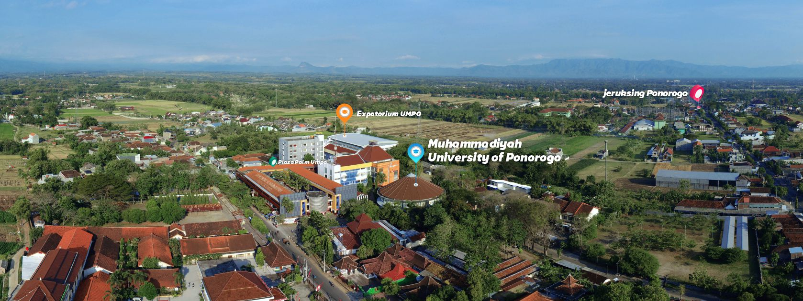

Sejarah
Universitas Muhammadiyah Ponorogo secara berdiri sejak tahun 1960, dengan diawali berdirinya Fakultas Tarbiyah Jurusan Pendidikan Agama Islam Institut Agama Islam Muhammadiyah (IAIM) Ponorogo yang berinduk ke Surakarta. Kemudian berdasarkan SK Menteri Agama RI Nomor 86 Tanggal 15 Agustus 1978, Jurusan tersebut mendapatkan status diakui. Pada tahun 1975 berdiri Fakultas Ilmu Sosialdan Ilmu Politik (FISIP) Jurusan Ilmu Kesejahteraan Sosial (S1), kemudian pada tahun 1978 dibuka Fakultas Keguruan dan Ilmu Pendidikan (FKIP) Jurusan PMP dan KN (S1) dan Pendidikan Matematikan (S1), yang mana keduanya berstatus sebagai cabang dati Universitas Muhammadiyah Malang. Mulai tahun akademik 1982 / 1983 yang ditandai dengan keluarnya ketentuan pasing out bagi fakultas-fakultas cabang, maka tokoh-tokoh Muhammadiyah Daerah Ponorogo yang didukung oleh segenap eksponen pendidikan yang ada merintis berdirinya Universitas Muhammadiyah Ponorogo secara mandiri dengan menambah dua fakultas baru yaitu Fakultas Ekonomi dan FakultasTeknik.
Dengan semangat idealisme yang tinggi dan perjuangan yang tak mengenal resa lelah, akhirnya keluarlah SK Menteri Pendidikan dan Kebudayaan RI Nomor 0813/O/1986 tanggal 19 Nopember 1986 yang mengesahkan berdirinya Universitas Muhammadiyah Ponorogo dengan 5 fakultas dengan 7 Jurusan semua strata S1 (Sarjana) yaitu Fakultas Tarbiyah dengan Jurusan Pendidikan Agama Islam (PAI), Fakultas Ilmu Sosial dan Ilmu Politik (FISIP) dengan Jurusan Kesejahteraan Sosial, Fakultas Keguruan dan Ilmu Pendidikan (FKIP) dengan Jurusan Pendidikan Moral Pancasila (PMP), Kewarganegaraan (kN), dan Pendidikan Matematika, Fakultas Ekonomi (FE) dengan Jurusan Manajemen dan Ekonomi Pembangunan, dan Fakultas Teknik (FT) dengan Jurusan Teknik Mesin.
Selanjutnya pada tahun 1990, berdasarkan peraturan yang ada saat itu, Jurusan Manajemen berhasil menaikkan status dari terdaftar menjadi diakui. Disusul kemudian pada tahun 1993 Jurusan Pendidikan Agama Islam mendapat status diakui. Pada tahun itu Universitas MuhammadiyahPonorogo juga berhasil membuka sejumlah jurusan baru yaitu: Ilmu Pemerintahan (S1) di FISIP, Jurusan Pendidikan Bahasa Inggris (S1) di FKIP, Jurusan Akuntansi (D3) di Fakultas Ekonomi (FE) dan Akademi Keperawatan dibawah naungan Departemen Kesehatan RI. Tiga tahun kemudian, tepatnya tanggal 1998 dibuka Jurusan Tekhnik Elektro (s1) di Fakultas Tekhnik. Kemudian di tahun 1998 juga berhasil dibuka program studi baru yaitu Jurusan Ilmu Komunikasi (D3) di FISIP dan Jurusan Keuangan dan Perbankan (D3) di Fakultas Ekonomi. Dan di tahun 2000 Fakultas Tarbiyah berubah nama menjadi Fakultas Agama Islam (FAI) dengan membuka programstudi baru yaitu AKTA IV dan D-2 PGTK. Dari masing-masing jurusan tersebut sekarang telah mendapat status terakreditasi dari Badan Akreditasi Nasional Perguruan TInggi (BAN-PT) Departemen Pendidikan Nasional Republik Indonesia.
Pada kurun waktu tahun 2005 sampai 2010 Universitas Muhammadiyah Ponorogo berhasil menambah Program Studi baru yaitu Prodi Akuntansi (S1) di Fakultas Ekonomi, Teknik Informatika (S1) di Fakultas Teknik, Kepewarawatan (S1), Kebidanan (D3), dan Profesi Ners (S1) di Fakultas Ilmu Kesehatan. Pada tahun 2010 sampai sekarang berhasil menambah 1 Fakultas yaitu Fakultas Hukum dengan prodi Ilmu Hukum (S1), Pendidikan Pasca Sarjana (S2) dengan Program Studi Pendidikan Agama Islam, dan di Fakultas Agama Islam menambah 3 Program Studi baru yaitu Ekonomi Syariah (S1), Perpustakan dan Informasi Islam (S1), dan Psikologi Islam (S1).
Dalam rangka menunjang kegiatan akademik diberbagai fakultas atau program studi tersebut, secara terus menerus Universitas Muhammadiyah Ponorogomelakukan upaya-upaya dengan menyediakan sarana dan prasarana fisik berupa pembangunan gedung perkuliahan 4 lokasi, dimana 3 dengan 3 lantai, dan 1 gedung dengan 4 lantai, dengan total ruang sejumlah 72 ruang. Gedung perpustakaan berlantai 4 lantai, dan Laboratorium Terpadu 5 lantai untuk laboratorium masing-masing program studi. Fasilitas perkantoran secara tersendiri yaitu Gedung Rektorat dan Perkantoran Satuan Kerja dan ruang pertemuan dengan kapasitas sedang dan besar. Ruang pertemuan dengan kapasitas besar adalah DOME (Gedung Bundar) untuk gelanggang olahraga dilantai 2 dan ruang pertemuan dilantai 1 dengan kapasitas 500 orang. Pada tahun 2019 Universitas Muhammadiyah Ponorogo berhasil menyelesaikan pembangunan Expotorium untuk kegiatan internal kampus maupun exsternal kampus dengan kapasitas 3500 orang.
Universitas Muhammadiyah Ponorogo memiliki jumlah mahasiswa 6200 orang, dengan 216 pendidik (dosen), dan 80 tenaga kependidikan (karyawan). Jaringan kerjasama Universitas Muhammadiyah Ponorogo berskala lokal, nasional, dan International, kerjasama yang berskala international antara lain dengan University Sultan Zainal Abidin Malaysia, University Rajamanggal Thailand, Mousa Foundation Kamboja. Prestasi Universitas Muhammadiyah Ponorogo yang berhasil diraih tahun 2020 webometric pada urutan 81, Unirank 59, Anugrah Kampus Unggul 18, dan Ristek Dikti pada urutan 116.